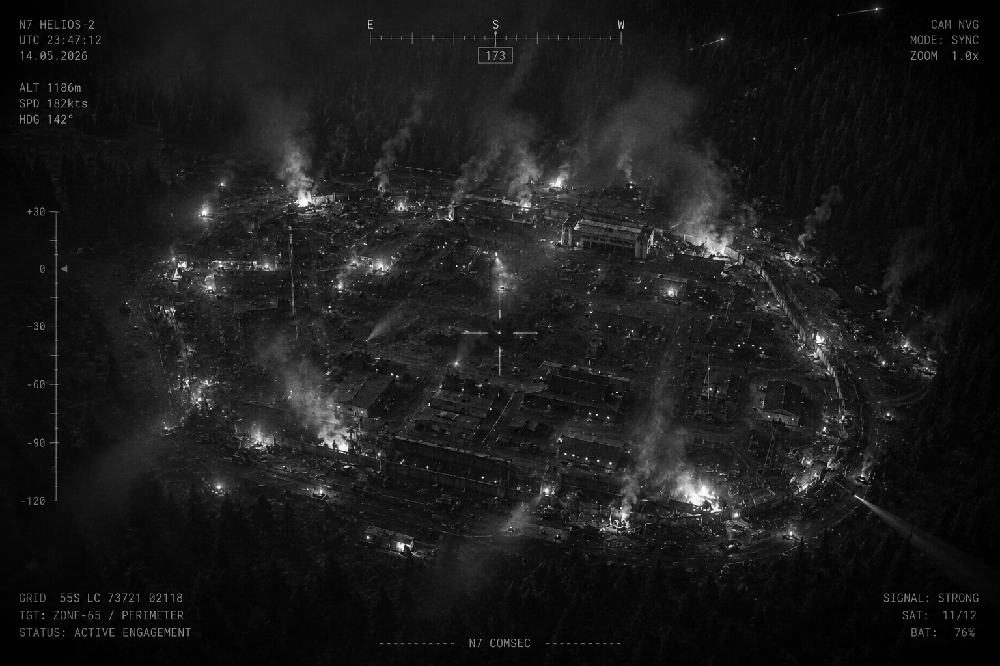
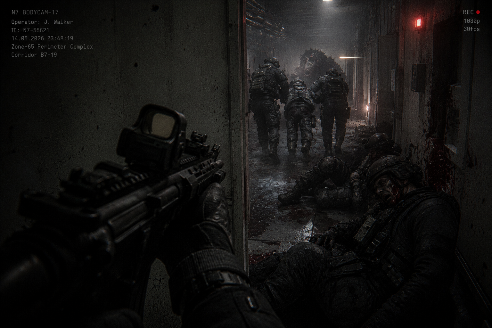
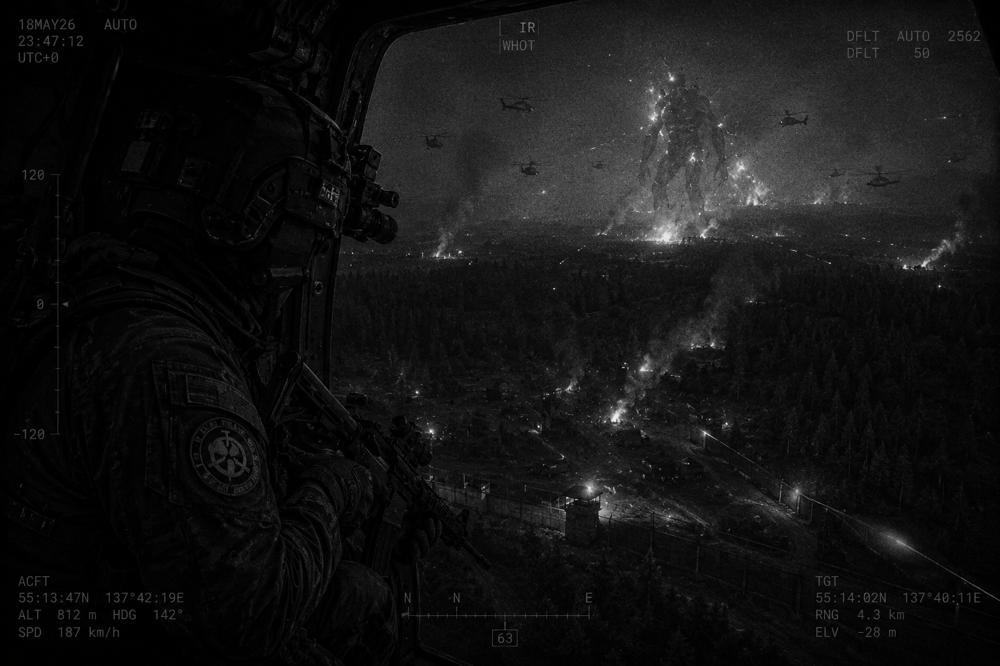

I. Текущая обстановка
Зона-65 подверглась полномасштабному скоординированному нападению со стороны Повстанцев Хаоса с применением неизвестных аномальных средств поддержки. Внешние сектора обороны P-2 — P-5 находятся под непрерывным огнём.
Противник использует:
- тяжёлое вооружение;
- бронетехнику;
- аномальные боевые средства;
- внутренние диверсионные группы.
Оборонительный периметр фрагментирован. На текущий момент удержание территории невозможно. Оставшиеся силы МОГ проводят операции по замедлению прорыва и локализации угроз.

II. Обстановка внутри комплекса
Подтверждены множественные нарушения условий содержания. Полностью потеряна связь с:
- Подуровнем-4;
- Медицинским блоком C;
- Исследовательским сектором-02;
- Восточными техническими коридорами.
Внутренняя служба безопасности комплекса понесла катастрофические потери и временно интегрирована в структуру командования МОГ Ню-7.
Оставшиеся сотрудники СБ:
- сопровождают выживший научный персонал;
- вручную герметизируют коридоры;
- удерживают проходы;
- эвакуируют раненых в резервные сектора.
Организованная эвакуация нижних уровней более невозможна.

III. Активность SCP
Подтверждена активность следующих объектов внутри комплекса:
- множественные экземпляры SCP-939;
- неизвестная биологическая масса вблизи реакторного сектора;
- сбежавшие гуманоидные аномалии;
- меметические заражения в секторе D.
Текущая классификация
НЕИЗВЕСТНО / НЕЗАРЕГИСТРИРОВАНО
Предположительная высота: не менее 200 метров.
Зафиксированные свойства:
- экстремальное тепловыделение;
- высокая устойчивость к тяжёлому вооружению;
- регенерация после прямых попаданий;
- электромагнитные помехи;
- агрессия ко всем воздушным целям.
На данный момент объект удерживается:
- ударными группами МОГ Эта-5 «Бомбардиры Егеря»;
- авиационными подразделениями;
- остатками тяжёлой артиллерии.
Заметного эффекта огневое воздействие не оказывает.

IV. Потери
МОГ Ню-7
- 61% состава выведено из строя;
- 23% подтверждено погибшими;
- оставшиеся подразделения разрознены.
Служба безопасности
- командная структура разрушена;
- офицеры действуют автономно.
Научный персонал
- эвакуация не завершена;
- часть исследовательских групп заблокирована внутри комплекса.
Вспомогательный персонал и D-класс
Статус неизвестен.
V. Логистика и инфраструктура
Боезапас критически истощён. Медицинские резервы практически исчерпаны.
Энергосистема комплекса нестабильна. Автоматизированные системы обороны были скомпрометированы изнутри.
VI. Оценка ситуации
Данное нападение не является спонтанной операцией. Противник обладал:
- схемами комплекса;
- графиками реагирования МОГ;
- внутренними кодами доступа;
- информацией о маршрутах снабжения;
- сведениями о протоколах изоляции.
Масштаб координации значительно превышает все ранее известные операции Повстанцев Хаоса.
VII. Запрос в центр
Запрашиваю немедленное разрешение на:
- протокол BLACK PRIORITY CONTAINMENT;
- региональную информационную блокировку;
- экстренную переброску резервов;
- полное отключение гражданских спутниковых каналов;
- применение необратимых мер локализации в случае падения периметра.
VIII. Дополнительные заметки
Мораль личного состава стремительно ухудшается. Сопротивление продолжается исключительно для предотвращения выхода угрозы за пределы комплекса.
Внутри объекта всё ещё находятся выжившие сотрудники Фонда. На текущий момент у нас отсутствуют силы для их эвакуации. Сотрудники СБ продолжают передавать сигналы бедствия из нижних секторов.
Мы больше не можем отправлять группы спасения.
Конец отчёта
Статус передачи: ██████████ · нестабильный
Последний подтверждённый сигнал: 23:58:41 UTC